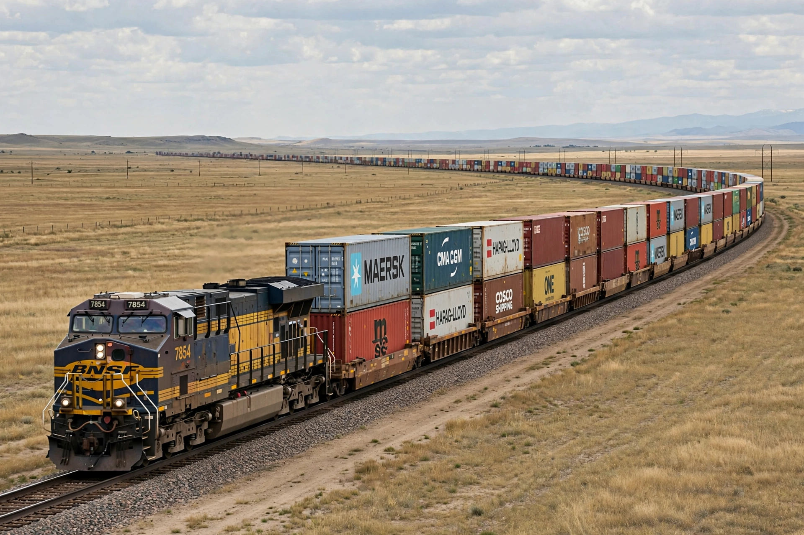

Freight train
From Wikipedia, the free encyclopedia

A double-stack intermodal train.A freight train (goods train) is a train used to carry cargo rather than passengers. Freight trains range from single-wagon trips to immense heavy-haul consists: Australian iron-ore trains exceed 40,000 tonnes, and the longest train ever run (BHP, 2001) stretched 7.3 km with 682 wagons. In North America, freight railroads are privately owned and highly profitable; in Europe, freight shares tracks with dense passenger services and a smaller modal share.
Types of traffic
Bulk trains (unit trains of coal, ore, grain) run point-to-point in fixed rakes; intermodal trains carry containers and trailers (double-stack in North America); manifest trains assemble mixed wagons in classification yards with hump sorting; special loads include oil \'ethanol trains\', car racks and refrigerated traffic.
Operations
Modern freight uses diesel-electric locomotives in multiple, increasingly with distributed power (radio-controlled locomotives mid-train and at the rear) and precision scheduled railroading (PSR) practices — longer trains, fewer yards — profitable but controversial for service and safety, a debate sharpened by the 2023 East Palestine, Ohio derailment.
History
Freight was the railways\' original purpose (coal from mines to canals). Air brakes (Westinghouse, 1869) and automatic couplers made long trains safe; containerisation from the 1960s rebuilt the business around intermodal traffic, now the largest revenue segment for US railroads.